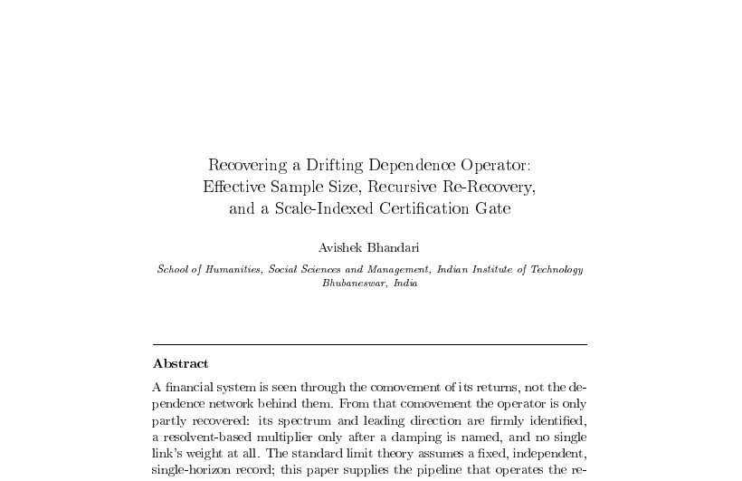

WORKING PAPER28 ppIdentification
Recovering a Drifting Dependence Operator: Effective Sample Size, Recursive Re-Recovery: and a Scale-Indexed Certification Gate
Working paper · Entronomics programme
We watch financial markets only through how their returns move together, yet we want the hidden web of dependence behind them. This paper shows how much of that web the data reveal: the dominant direction and how concentrated it is, but not the weight of any single link. It builds a method for records that are serially correlated, drift over time, and span several horizons: correlation shrinks the usable sample, fine horizons reveal structure coarse ones miss, a past-only memory tracks the drift, and directional links are screened against a strict noise benchmark. A study of eighteen global equity indices across three market regimes illustrates the method, not those episodes. One theme recurs: structure can be recovered sharply yet remain nearly impossible to forecast, and nothing here is offered as a forecast.

Working paper
Full text in preparation
This working paper belongs to the Identification movement of the Entronomics programme. The full manuscript is being prepared; the abstract and its place in the programme are above. The forthcoming book draws the movements together.